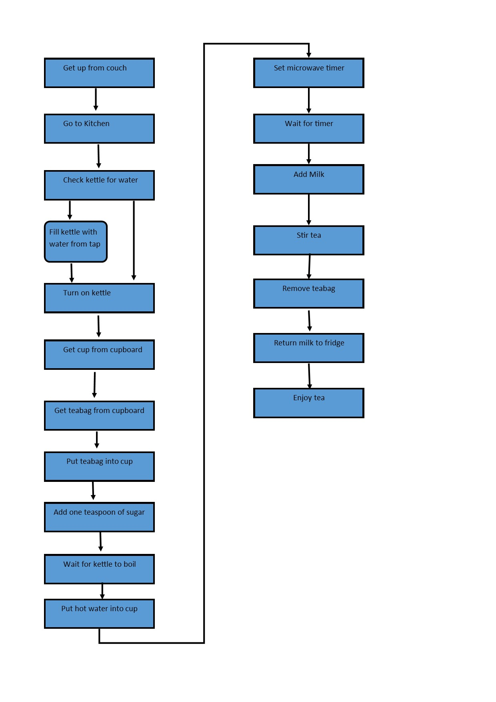

Making tea algorithm
Tea bag
Tea
Spoon
Kettle
Water
Cup
Milk
Sugar
Fridge
Microwave
• Get up from couch
• Go to Kitchen
• Check kettle for water
• If there is water turn on the kettle
• Else fill kettle with water from the tap then turn on kettle
• Get a cup from the cupboard
• If no cups in the cupboard get one from the dishwasher
• Get a teabag from the cupboard
• Put teabag into cup
• Add one teaspoon of sugar
• Wait for kettle to boil
• When kettle has boiled pour hot water into cup leaving a little room for milk
• Set timer on microwave for 3 minutes
• Get milk from fridge
• Once timer on microwave goes off add milk to tea
• Stir the tea
• Remove the teabag and place it in the bin
• Return milk to fridge
• Drink tea
